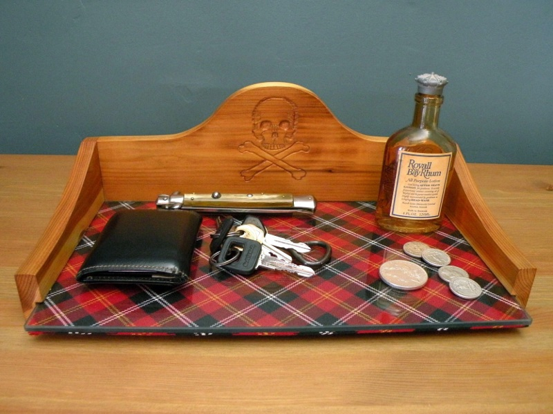
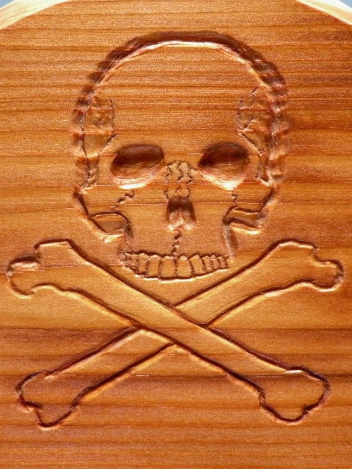
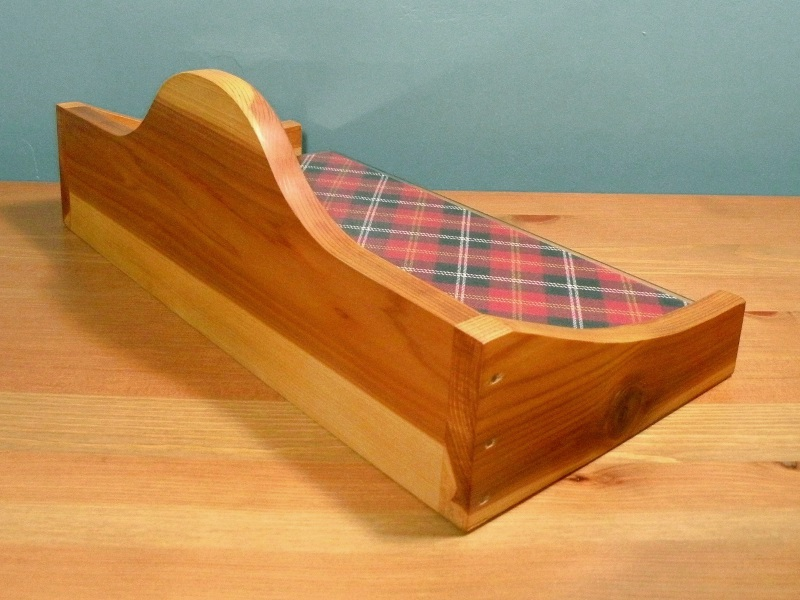

Dresser Valet Dresser Valet
Dresser Valet Dresser ValetW.W.K.K. - Wallet, Watch, Knife, Keys. That used to be how I checked myself for the appropriate equipage before venturing out into the world. As time passed, I replaced the pocket watch with a cellphone, and so the mnemonic device no longer serves, however my pocket contents still require a resting place at the end off the day. I used to designate one corner of my dresser for the small articles I carried about daily, however I feared the constant dropping of keys and change onto the wood must eventually lead to scarring. To rectify the situation, I made this dresser valet.
I employed cedar as the body of the dresser valet, finishing the wood only with paste wax. The piece was long-completed before I learned to cut box and dovetail joints, and even before I learned to dowel a butt joint; therefore, I used nails. A channel routed in the wood holds a 1/4" piece of edge-polished glass, overtop a fabric covered panel which merely serves as decoration; both slide out independantly, which allows photos or notes to be inserted between the two.
The skull was not planned, it merely happened. The bell curve of the back board reminded me of the classic bicorne pirate hat (more accurately, the cartoon version of said hat), so the skull - never far from my mind, it would seem - immediately suggested itself. I shallowly carved the skull into the wood using various knives and a Dremel.
The rear of the valet best shows the dramatic contrast between the heartwood and sapwood. Cedar is a beautiful, luminous wood, easy to carve and well suited for items such as this.
Created by Sean Corron, April 2, 2011.